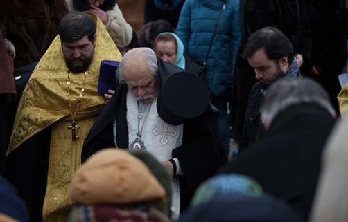

7 фев 2017
Освящение закладного камня
7 февраля 2016 года в 14.00 прихожане строящегося храма в честь преподобного Саввы Сторожевского встречали владыку Пантелеимона, епископа Орехово-Зуевского. Жители нашего района собрались на чин освящения
закладного камня в фундамент будущего храма. Это поистине историческое событие для жителей нашего района и города в целом. Храм преподобного Саввы Сторожевского...
11 фев 2017
Визит Ресина В.И.
2 февраля 2017 года строительную площадку храма преподобного Саввы Сторожевского в Измайлово посетили член комитета Госдумы по земельным отношениям и строительству, советник Святейшего Патриарха Московского и
всея
Руси Кирилла, Владимир Иосифович Ресин. Вместе с ним строящийся храм посетил архимандрит Илия. В ходе визита были отмечены значительные успехи строительства и